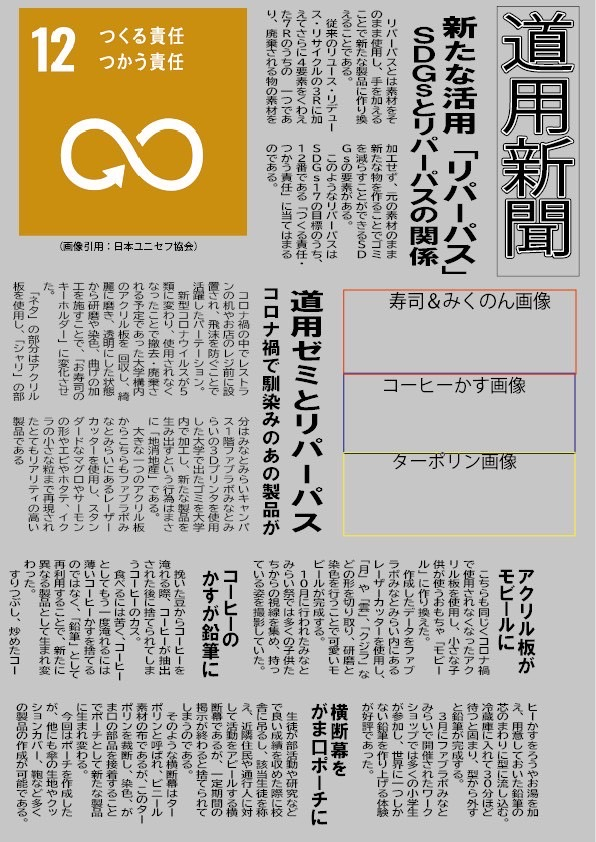
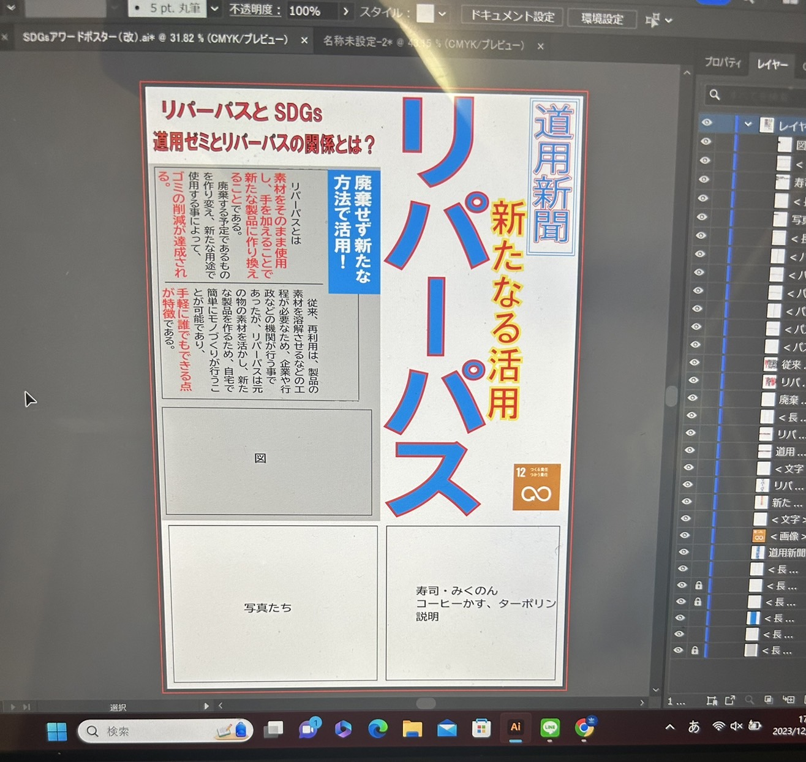

SDGsアワードポスター経過報告
こんにちはreiです。
今回は
episode8で告知したSDGsアワードに提出するポスターの作成経過報告をしたいと思います!
第一次報告
ゼミでの一時報告会では新聞風にリパーパスの説明やそれに伴うゼミでの活動（プラ寿司や他のゼミメンバーの活動）を記したポスターを作成しました。

このポスターを第一次報告会で見せたところ、文字が多くパット見のパンチが薄い点や、リパーパスという言葉に関するわかりやすい図があると理解しやすいのではという指摘を受けました。
とりあえず年内中にできたポスター
報告会でのアドバイスを踏まえ、とりあえず年内中に作成したポスターがこちらです。

前回よりもカラフルに色を使い、スポーツ新聞風にデザインし、ぱっと見のインパクトを重視しました。
また、図は完成していませんが、リパーパスに関する活動はどのように環境に良い活動なのか、また、どれくらい身近で手軽に行える活動であるのかを分かりやすく図にまとめたいと思います。（年始に）
年内の活動はこれにて終了!!来年もよろしくお願いします。